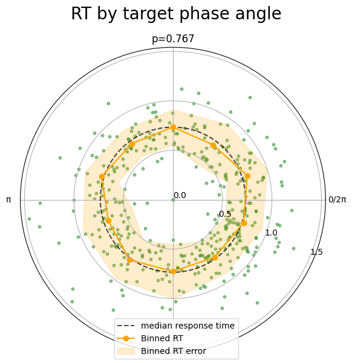
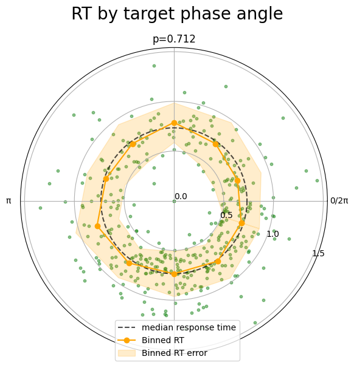

Test association with behavioural variable such as reaction time#
This notebook runs permutation tests to see whether there is a statistically significant relationship between the phase angle at which a target stimulus was presented and the response was given by the participant.
[1]:
import pickle as pkl
import numpy as np
import matplotlib.pyplot as plt
from pyriodic import Circular
from pyriodic.preproc import RawSignal, Pipeline
from pyriodic.phase_events import create_phase_events
from pyriodic.viz import CircPlot
from pyriodic.datasets import sample
from pyriodic.permutation import permutation_test_phase_modulation
/Users/au661930/Library/CloudStorage/OneDrive-Aarhusuniversitet/Dokumenter/projects/_BehaviouralBreathing/code/AnalysisBreathingBehaviour/BreathingBehaviourVenv/lib/python3.13/site-packages/tqdm/auto.py:21: TqdmWarning: IProgress not found. Please update jupyter and ipywidgets. See https://ipywidgets.readthedocs.io/en/stable/user_install.html
from .autonotebook import tqdm as notebook_tqdm
[2]:
preproc_pipeline = (
Pipeline() \
.add(RawSignal.filter_bandpass , low=0.1, high=1.0) \
.add(RawSignal.smoothing, window_size=500) \
.add(RawSignal.zscore) \
)
[3]:
path = sample.data_path()
with open(path, "rb") as f:
data = pkl.load(f)
resp_ts, sfreq, behav_data = data["resp_ts"], data["sfreq"], data["behav_data"]
raw = RawSignal(resp_ts, sfreq)
raw = preproc_pipeline.apply(raw)
PA, peaks, troughs = raw.phase_twopoint(prominence=0.1)
behav_targets = behav_data[behav_data["event_type"].str.contains("target")]
circ_targets = create_phase_events(
PA, events=behav_targets["event_samples"].values,
metadata=behav_targets
)
Rejected 0 out of 416 events (0.0%)
[4]:
# defining some constants
num_bins = 10
stat = "median"
filter_outliers = True
[5]:
# defining some helper functions
def binned_stats(phase_angles, var, n_bins=10, stat="mean"):
"""
Calculate binned statistics for response times.
Parameters:
rt (array-like): Response times.
n_bins (int): Number of bins to use.
stat (str): Statistic to calculate ('mean' or 'median').
Returns:
bin_centers (array): Centers of the bins.
avg_response_times (array): Average response times in each bin.
std_response_times (array): Standard deviation of response times in each bin.
"""
bin_edges = np.linspace(0, 2 * np.pi, n_bins + 1)
bin_centers = (bin_edges[:-1] + bin_edges[1:]) / 2
avg_response_times = np.zeros(n_bins+1)
std_response_times = np.zeros(n_bins+1)
for i in range(n_bins):
bin_mask = (phase_angles >= bin_edges[i]) & (phase_angles < bin_edges[i + 1])
if stat == "mean":
avg_response_times[i] = np.mean(var[bin_mask]) if np.any(bin_mask) else np.nan
elif stat == "median":
avg_response_times[i] = np.median(var[bin_mask]) if np.any(bin_mask) else np.nan
else:
raise ValueError("stat must be 'mean' or 'median'")
# Ensure the last two dots are connected
std_response_times[i] = np.std(var[bin_mask]) if np.any(bin_mask) else np.nan
# Ensure the last two dots are connected
avg_response_times[-1] = avg_response_times[0]
std_response_times[-1] = std_response_times[0]
bin_centers = np.concatenate((bin_centers, [bin_centers[0]]))
return bin_centers, avg_response_times, std_response_times
Association between reaction time and phase angle at the time of target presentation#
[6]:
fig, ax = plt.subplots(1, 1, figsize=(6, 6), subplot_kw={"projection": "polar"})
targets = circ_targets.data
rt = circ_targets.metadata["rt"].values
targets = targets[~np.isnan(rt)]
rt = rt[~np.isnan(rt)]
if filter_outliers:
# Filter out outliers by standard deviation
upper_bound = np.mean(rt) + 5 * np.std(rt)
lower_bound = np.mean(rt) - 5 * np.std(rt)
# Filter out outliers
filtered_indices = np.where((rt >= lower_bound) & (rt <= upper_bound))
targets = targets[filtered_indices]
rt = rt[filtered_indices]
# PERFORM PERMUTATION TEST ON THE DATA
obs, p = permutation_test_phase_modulation(
targets, rt, n_null=1000, verbose=False, n_bins=num_bins
)
circ_tmp = Circular(targets)
plot = CircPlot(circ_tmp, ax=ax, group_by_labels=False)
plot.add_points(
y=rt,
s=10,
alpha=0.5,
marker='o',
color="forestgreen",
label=None
)
plot.add_hline(
y=np.mean(rt) if stat == "mean" else np.median(rt),
label=f"{stat} response time",
color="black",
alpha=0.7,
linestyle="--"
)
# AVERAGE RESPONSE TIME IN BINS + STD
bin_centers, avg_response_times, std_response_times = binned_stats(circ_tmp.data, rt, n_bins=num_bins, stat=stat)
plot.add_polar_line(
angles=bin_centers,
values=avg_response_times,
errors=std_response_times,
color='orange',
label='Binned RT',
marker='o',
linestyle='-'
)
# Customize the plot
ax.set_yticks(np.arange(0, np.max(rt) + 0.5, 0.5))
ax.set_yticklabels([f"{i:.1f}" for i in np.arange(0, np.max(rt) + 0.5, 0.5)])
ax.set_title(f"p={p.round(3)}", fontsize=12)
ax.yaxis.grid(True)
# Add a single legend for the entire figure at the top center
handles, labels = ax.get_legend_handles_labels()
fig.legend(handles, labels, loc='lower center')
fig.suptitle("RT by target phase angle", fontsize=20)
plt.tight_layout()
plt.show()

Association between reaction time and phase angle at the time of response#
[7]:
behav_responses = behav_data[behav_data["event_type"].str.contains("response")]
circ_responses = create_phase_events(
PA, events=behav_responses["event_samples"].values,
metadata=behav_responses
)
Rejected 0 out of 388 events (0.0%)
[8]:
fig, ax = plt.subplots(1, 1, figsize=(6, 6), subplot_kw={"projection": "polar"})
responses = circ_responses.data
rt = circ_responses.metadata["rt"].values
responses = responses[~np.isnan(rt)]
rt = rt[~np.isnan(rt)]
if filter_outliers:
# Filter out outliers by standard deviation
upper_bound = np.mean(rt) + 5 * np.std(rt)
lower_bound = np.mean(rt) - 5 * np.std(rt)
# Filter out outliers
filtered_indices = np.where((rt >= lower_bound) & (rt <= upper_bound))
responses = responses[filtered_indices]
rt = rt[filtered_indices]
# PERFORM PERMUTATION TEST ON THE DATA
obs, p = permutation_test_phase_modulation(
responses, rt, n_null=1000, verbose=False, n_bins=num_bins
)
circ_tmp = Circular(responses)
plot = CircPlot(circ_tmp, ax=ax, group_by_labels=False)
plot.add_points(
y=rt,
s=10,
alpha=0.5,
marker='o',
color="forestgreen",
label=None
)
plot.add_hline(
y=np.mean(rt) if stat == "mean" else np.median(rt),
label=f"{stat} response time",
color="black",
alpha=0.7,
linestyle="--"
)
# AVERAGE RESPONSE TIME IN BINS + STD
bin_centers, avg_response_times, std_response_times = binned_stats(circ_tmp.data, rt, n_bins=num_bins, stat=stat)
plot.add_polar_line(
angles=bin_centers,
values=avg_response_times,
errors=std_response_times,
color='orange',
label='Binned RT',
marker='o',
linestyle='-'
)
# Customize the plot
ax.set_yticks(np.arange(0, np.max(rt) + 0.5, 0.5))
ax.set_yticklabels([f"{i:.1f}" for i in np.arange(0, np.max(rt) + 0.5, 0.5)])
ax.set_title(f"p={p.round(3)}", fontsize=12)
ax.yaxis.grid(True)
# Add a single legend for the entire figure at the top center
handles, labels = ax.get_legend_handles_labels()
fig.legend(handles, labels, loc='lower center')
fig.suptitle("RT by target phase angle", fontsize=20)
plt.tight_layout()
plt.show()
